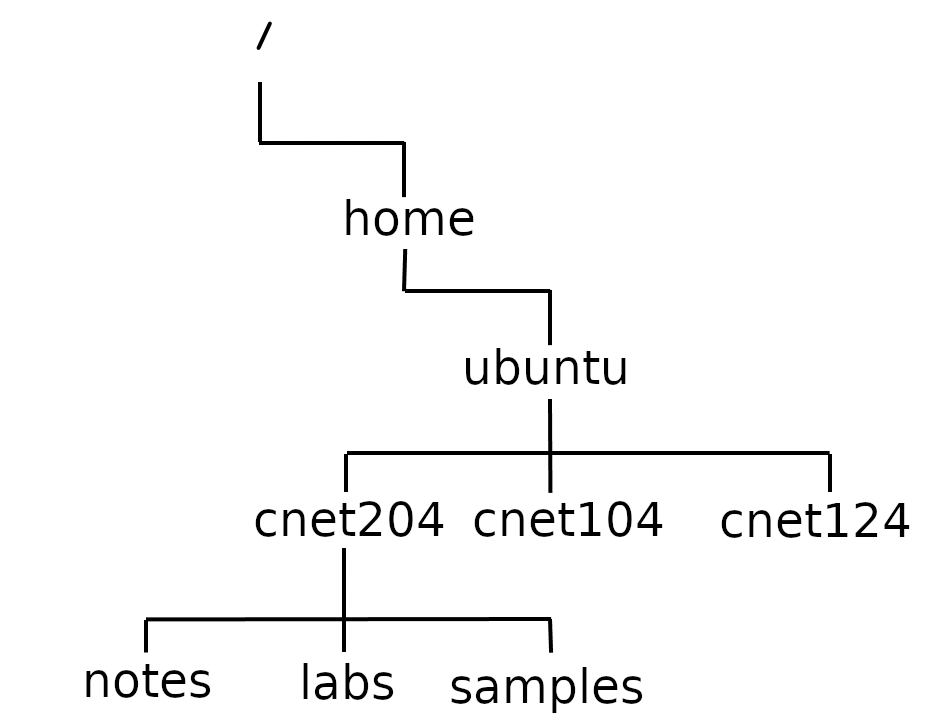
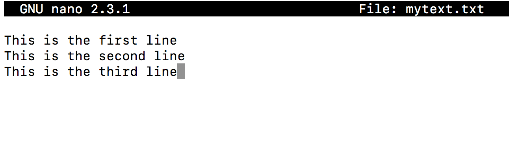
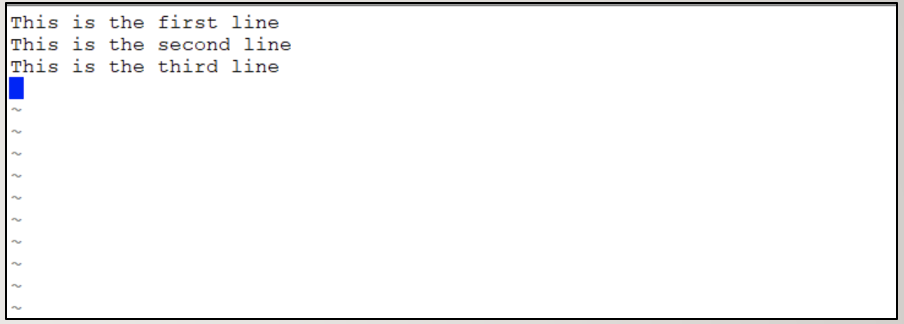

Lab 2 - Introduction to Linux
Overview
This week's lab will cover the following:
- Using the Linux Shell.
- Accessing help from the Linux command line.
- Editing the command line.
- Accessing command history.
- Navigating the Linux filesystem.
- Creating and managing directories.
- Using command line text editors.
Lecture Slides
Using the Linux Shell
Servers are commonly configured to provide access to a command line interface (CLI) only. Knowing how to use Linux from the commmand line is an important skill as a system administrator. In this lab you will be learning how to use Linux using Ubuntu Server. In Lab 3 you will learn how to install and configure Apache, which is an open source web server.
General Linux Command Structure is as follows:
command argument1 argument2 ...Some Linux commands can be issued by entering the Linux command line without arguments (e.g. pwd, date, ls, cal), but many Linux commands can be issued with arguments (e.g. cal 2002, cd /bin, ls -l -a /bin ).
What Does an Argument Represent?
An argument can respresent:
- a file pathname
- a command option
- a series of characters (i.e. text) that the command can use
An argument is separated from a command (or from other arguments) by a SPACE, MULTIPLE SPACES or a TAB.
Perform the following steps:
- Start the AWS learner lab.
- Login to the Ubuntu Server instance (named first) using SSH. You created this in Lab 1.
Issue the following command and observe the output:
pwd
The pwd command displays your current working directory. In fact, pwd stands for print working directory. Linux commands are commonly a short form describing the purpose they fulfill. Knowing what the command means will help you remember the syntax.
Issue the following command and observe the output:
ls
The ls command is used to list files. Remember what you learned above about commands describing the purpose they fulfill. You will find it useful time and again.
Now lets try something a little more challenging. Issue the following commands:
cd /bin
pwd
Based on the output of the pwd command, what do you think cd /bin did?
Issue the following commands and note the differences between them.
ls
ls -l
You just used an option. Options modify the output of the command. Commands have many options. You will get to know some through common usage. Try each of the following:
- Try issuing the cd command again, but without any option.
- Now issue the pwd command again. Notice what happened.
- Lets try adding a different option to the ls command. Issue the following:
ls /bin
Note, you can provide the directory you wish a file listing of without having to change to that directory first. Try combining options by issuing the following:
ls -l /bin
Our screen has gotten a bit cluttered. Why don't we clear it?
clear
Accessing help in Linux
There are many different commands in Linux. In fact, there are over 2500 different commands and utilities. It is important to be able to know where to look for help, so you can learn as you go. You will always be discovering new things in Linux, no matter how long you have used it. Fortunately, the man command (short for manual) provides useful information such as:
- command usage
- acceptable command arguments
- command options
- examples
There is even a man page for the man command! Issue the following command to view it's contents.
man man
Once you are in the man page you can navigate through them using the following methods:
- ENTER
- Moves down one line.
- SPACEBAR
- Moves down one screen.
- ctrl + b
- Moves up one screen.
- /pattern/
- Searches for the word pattern within the man page. You can use this to search for words within a man page.
- q
- Quit the man page.
Feel free to browse through the man page for the man command if you wish. Press q to quit when you are ready.
To do:
Using what you have learned, access the man page for the ls command. Browse through and make note of the following options:
- Use a long listing format
- Do not ignore entries starting with . (which are hidden files)
Return to your home directory and issue the ls command for each of the options you just learned. Note the differences in output.
Editing the command line
Shortcut keys allow you to increase your productivity by doing things more efficiently (with less key strokes). In this section you will learn a few common Bash shortcuts.
Type the following command but do not press the ENTER key:
cd /bin
- Press ctrl + a at the same time and observe what happens.
- Now try alt + f at the same time. Repeat this a second time.
- Press alt +b at the same time. What happened?
- Press ctrl + w. What did this do?
- Type ls followed by ctrl + e, and hit enter to execute the modified command.
- Press ctrl + u to clear your command line.
Once again, our screen has gotten a little cluttered. You could clear it with a command you have already used, or you could learn a new useful shortcut. Try pressing ctrl + l at the same time.
Here is a reference some useful shortcut keys and their purpose:
- ctrl + l
- Clear the screen.
- ctrl + u
- Clear the command line.
- up arrow / down arrow
- Scroll up / down through your command history.
- backspace, ctrl + backspace, ctrl + h
- Delete the character before the cursor.
- ctrl + w
- Delete the word before the cursor.
- ctrl + a
- Move the cursor to the beginning of the command line.
- ctrl + e
- Move the cursor to the endof the command line.
- alt + f / alt + b (on Mac: OPTION + right/left arrow)
- Move forward/backward one word.
Accessing command history
Recalling commands from your history is another very useful, time saving task in Linux. There are a couple of ways you can access this.
- You can use the up arrow on your keyboard to bring up (but not execute) the last command you issued. This is particularly useful if you are reissuing the command same with slight changes. Use the up arrow to continue browsing backwards one command at a time. If you go to far, you can reverse direction with the down arrow.
- Sometimes the command you want to re-issue is far enough back in your history that scrolling through one item at a time is tedious. Fortunately, the history command provides additional functionality to speed things up a bit. It gives you a listing of all the commands stored in your command history. You can re-execute any of them by issuing a ! followed by the number in front of it. Alternatively, issuing ! with a partially completed command will re-execute the last command that began the same way. Both are extremly useful.
To do:
- Scroll through your command history using the up arrow until you find the ls command. Don't forget you can scroll back if you have gone too far. Once you have the command on your terminal, hit the enter key to execute it.
- Issue the command !cd and hit enter. What happened? Use pwd to confirm you have changed directories.
Navigating the Linux filesystem
The Linux file system is hierarchical, like other operating systems (such as Windows). However, there are no drive letters in Linux. Everything descends from the root directory, which is represented by a /. Other directories found under root are referred to as child directories, grandchild directories, etc. This hierarchical structure resembles an "upside-down tree". There is actually a tree command that displays a "directory tree diagram"!
Directory Pathnames
A pathname is used to specify a route to a file within the file system.
A pathname points to a file system location by following the directory tree hierarchy expressed in a string of characters in which path components, separated by a delimiting character, represent each directory. The delimiting character is most commonly the slash ("/"). Reference. The following displays and defines commonly used directories for all Linux filesystems.
- /
- Root directory (ancestor to all directories).
- /home
- Used to store users' home directories.
- /home/username
- A specific User's Home Director.
- /bin
- Common system binaries (commands).
- /usr/bin
- Common utilities (commands) for users.
- /usr/sbin
- Common utilities for system administration.
- /etc
- System administration files (eg. passwd).
- /var
- Dynamic files (log and mail files).
- /tmp, /var/tmp
- Temporary files for programs.
- /dev
- Device driver files (terminals, printers, etc.)
Creating & managing directories
Directory & File naming rules
Before you learn how to create directories, it is important to understand what represents an appropriate directory filename. Here are some common file-naming rules:
- Linux characters are case sensitive. It is recommended to be consistent (e.g. use all lowercase letters)
- Adopt a consistent directory naming scheme (this will help you to navigate within your directory structure)
- Make your directory names meaningful
- Avoid non-alphanumeric characters, as they may have a special meaning to the system that will make your work more difficult when changing to directories, etc.
- Avoid using spaces for directory names (consider periods, hyphens, and underscores instead)
Creating Directories
Login to your instance in AWS if you haven't already. Issue a command to confirm you are in your home directory (you have learned this one already in the lab).
Before we begin, you are going to create a directory called bin in your home directory.
mkdir ~/bin
Now, use git clone to download check scripts for this lab. You will run these scripts at different points in the lab (included in the instructions) to check your work. When you recieve a message indicating everything was successful, take a screenshot. You will need to upload all three screenshots (from the three lab check scripts) as part of your submission.
git clone https://github.com/CNET204/lab-check ~/bin/
Install the tree command so we can use it later.
sudo apt install tree
You are going to issue a series of commands to create the following directory structure.
Issue the following command to create the cnet204 directory.
mkdir /home/ubuntu/cnet204
Confirm the directory was created by issuing the ls command with your newly created directory as an argument.
ls /home/ubuntu/cnet204
Try reissuing ls with the -d option. This can be useful to confirm the directory has been created, instead of just listing the contents of the directory.
ls -d /home/ubuntu/cnet204
Note, you can include the -l option to obtain a long listing. You can combine these options in any order and achieve the same effect. Now, lets create the cnet104 and cnet124 directories.
mkdir /home/ubuntu/cnet104 /home/ubuntu/cnet124
Next, confirm the directories were created.
ls -ld /home/ubuntu/cnet104 /home/ubuntu/cnet124
Issue a command to change to the cnet204 directory. Then confirm you are in the cnet204 directory. Now, we are going to create the notes, tutorials and samples directories.
mkdir notes labs samples
Note the difference in the paths you have used. For the inital directories you used what is known as an absolute path (which describes the absolute location of the file or directory from root (/)). For notes, labs and samples you used a relative path. Relative paths are relative to where you are in the file system.
Issue a command to change to your home directory.
cd
There is a more efficient (yet slightly more complicated) way to create the above directory structure. Lets remove it, then recreate it in a single command to demonstrate this. First, remove your directories:
rm -r cnet204 cnet104 cnet124
Issue a command to confirm the directories have been removed.
Now, we're going to issue a single command to recreate the directories and sub-directories. The -p option allows the creation of parent directories and their decendents in a single command.
mkdir -p cnet204/notes cnet204/labs cnet204/samples cnet104 cnet124
Run the following script to check your work. If it indicates everything is correct, take a screenshot to include in your submission.
bash ~/bin/lab2-check-1
Viewing Directory Contents / Copying & Moving Directories
Issue the tree command to confirm the directory structure matches the above sample before you proceed. Then, issue the following command to move the cnet204 directory (and it's contents) into cnet104.
cp -R cnet204 cnet124
Issue the tree command again to confirm the directories have been moved. Next, move cnet124 into the labs directory.
mv cnet104 cnet124/cnet204/labs
Issue the tree command again to confirm the directories have been moved.
Run the following script to check your work. If it indicates everything is correct, take a screenshot to include in your submission.
bash ~/bin/lab2-check-2
Removing Directories
When it comes to removing directories there are a couple different options:
- rmdir
- Can be used to remove empty directories.
- rm -r
- Can be used to remove a directory and it's contents recursively.
Use the rmdir command to remove the cnet104 and cnet124 directories.
rmdir cnet104 cnet124
Now issue a command to confirm they have been deleted.
Use the rm -ri command to remove cnet204 and it's contents. The -i option is not necessary, however it is sometimes useful when removing a large number of files in a safe manner. It will cause the rm command to prompt you before it removes a file or directory, or even descends into a directory.
rm -ri cnet204
Run the following script to check your work. If it indicates everything is correct, take a screenshot to include in your submission.
bash ~/bin/lab2-check-3
Using command line text editors
In the Linux file system, everything is a file. This makes command line text editors extremely powerful tools. You will need to know how to use them to perform regular system administration tasks like configure services and write scripts (which we will not be learning in this course). There are two commonly used text editors that we will look at: vi (vim) and nano.
Nano
We'll look at Nano first, because it is often considered to be the more user-friendly of the two. You can launch nano by issuing the nano command from your terminal. It immediately puts you in input mode (this is an important concept when it comes to looking at Vi), so you can begin entering text. It does not however, provide features such as syntax highlighting (which makes vim a superior choice). You can launch nano in one of two ways:
- Without arguments
- Nano will open. When you save, you will be prompted to enter a file name.
- With arguments
- If the file exists, nano will open it for editing. If the file doesn't exist, nano will create the file and open it for editing.
Create file mytext.txt in your home directory using nano.
nano mytext.txt
Now enter the following text:
You will notice within the editor there is a list at the bottom of commonly used commands. Note the control key is represented by a ^ symbol. Here is a handy reference:
- <ctrl><spacebar>, <esc><6>
- Move forward/backward one word.
- <ctrl><a>, <ctrl><e>
- Move to beginning/end of line.
- <ctrl><k>
- Cut the line.
- <esc><6>
- Copy the Line.
- <ctrl><u>
- Paste Cut/Copied Text.
- <ctrl><g>
- Display help screen (ctrl + x to exit).
- <ctrl><x>
- Save and exit.
Refer to the above reference, and press the key combination to save your session. You will be prompted to modify your file, type the letter y for yes. The name of the file will then display, press the enter key to save your changes.
The prompt for the file name allows you to change the name of the file if you wish. By pressing enter, it accepts the default filename.Practice some editing options until you feel comfortable. The save and exit nano.
Vi (vim)
The vi (vim) text editor (although taking longer to learn) has outstanding features to increase coding productivity. The major different between nano and vi is that vi starts in COMMAND LINE mode. You need to issue letter commands to enter text. Also you can press colon “: ” in COMMAND mode to enter more complex commands. Just like with nano, you can launch vi in the same two ways (with an argument to both open an existing file/or create a file, or without an argument).
Issue the following command to create the file called othertext.txt (in your home directory) and open it for editing.
vi othertext.txt
Vi places you in command mode first. You will need to issue a command to switch to input mode. To enter input mode, press the letter i on your keyboard. Now enter the following text:
Now that you have entered some text you are ready to save and exit. First, you have to exit input mode and return to command mode. To do that, hit the ESC key. Now you can save and exit by issuing either the following commands (note the colon is part of the command):
:wq
or
:x
Here is a useful table of common vi (vim) commands:
- i
- Enter INPUT mode.
- <esc>
- Enter COMMAND mode.
- x
- Delete text to the right in COMMAND mode.
- W
- Move forward one word in COMMAND mode.
- B
- Move back one word in COMMAND mode.
- dd
- Cut line in COMMAND mode.
- yy
- Copy Line in COMMAND mode.
- p / P
- Paste Cut/Copied Text below/above line in COMMAND mode.
- u
- Undo previous editing command.
- :help
- Display help screen in COMMAND mode.
- :x
- Save editing changes and exit (in COMMAND mode).
- :w name
- Save editing changes to "name" in COMMAND mode. Without a name provided, it will save the current file (assuming you have opened an existing file for editing).
- :q!
- Abort editing session and exit (in COMMAND mode).
Completing the Lab
Take a screenshot of your successful connection and submit that to the dropbox on eCentennial for proof of completion. The following Exploration Questions are for furthering your knowledge only, and may appear on quizzes or tests at any time later in this course.
Exploration Questions
- What is the difference between a Linux command and an argument?
- What is the purpose of a Linux command option?
- What character(s) are used to separate commands and arguments?
- How can you access help from the command line?
- How can you access your command history?
- What are two ways to re-execute a command found in your history?
- What ancestor directory do all directories descend from in Linux?
- Where are user's home directories stored in Linux?
- Where are Dynamic log files stored in Linux?
- How do you create a directory?
- How do you remove an empty directory?
- How do you remove an non-empty directory and it's contents?
- How do you copy a file or directory?
- How do you move/rename a file or directory?
- What are the two command line text editors commonly used in Linux?